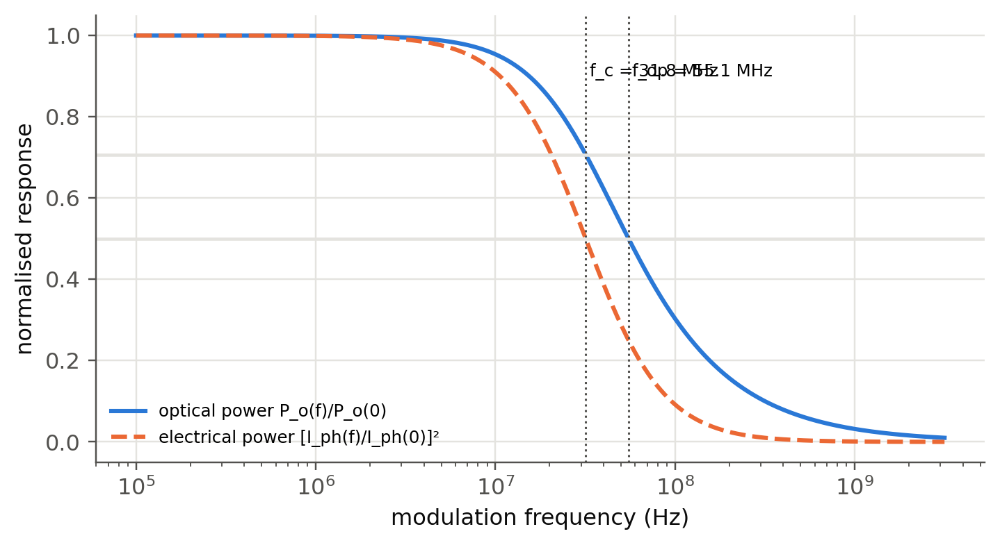
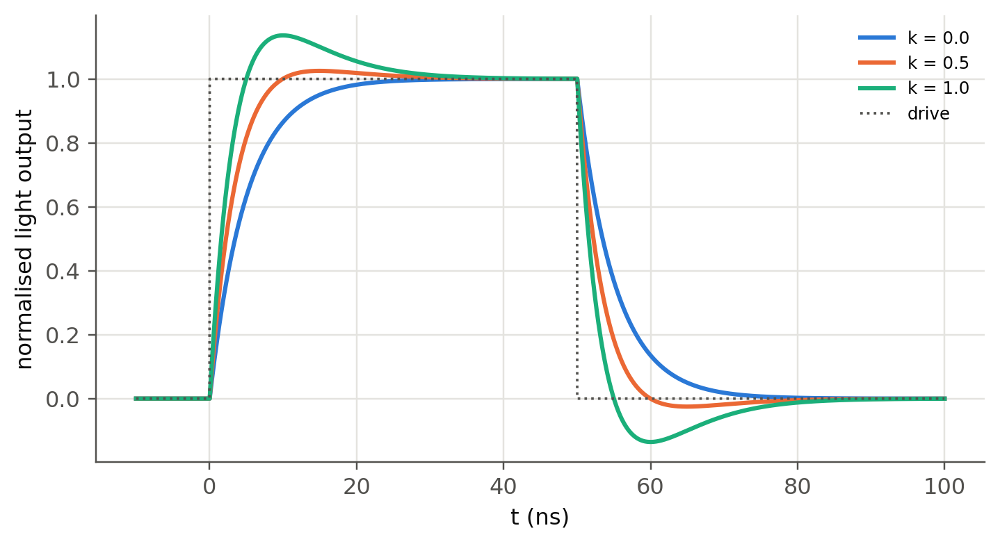

11 LED types, drive circuits and speed
 Run this chapter’s code in Google Colab (no installation).
Run this chapter’s code in Google Colab (no installation).
Slides 134–138 (surface- and edge-emitting LEDs, coupling into fibers, pigtailed LEDs) and 144–151 (analog drive, driver modules, sinusoidal modulation and bandwidth, digital drive, rise and fall times, speed-up capacitors).
11.1 Key relations
The light output follows the current, so an LED is driven by a current source. The simplest driver is a resistor in series with a voltage supply, \(I_F=(V-V_F)/R\) (slide 144). For a transistor or op-amp current source \(I_F\approx V/R_F\).
Modulating the current at frequency \(f\) modulates the injected carrier population. Carriers disappear with the net lifetime \(\tau\), where \(1/\tau=1/\tau_r+1/\tau_{nr}\), so the LED behaves like a first-order low-pass filter (slides 146–147):
\[ \frac{P_o(\omega)}{P_o(0)}=\frac{1}{\sqrt{1+(\omega\tau)^2}},\qquad f_c=\frac{1}{2\pi\tau}\ \text{(electrical bandwidth)},\qquad f_\text{op}=\frac{\sqrt3}{2\pi\tau}\ \text{(optical bandwidth)}. \]
At \(f_c\) the optical power drops to 0.707, so the detected electrical power (\(\propto I_\text{ph}^2\)) drops to 1/2. At \(f_\text{op}\) the optical power itself drops to 1/2. For digital modulation the same time constant gives 10–90 % rise and fall times (slide 148)
\[ \tau_R=\tau_F=2.2\,\tau . \]
11.2 Modulation explorer
A 16-bit NRZ pattern drives the LED. The speed-up capacitor of slide 151 adds a current spike at each transition that decays with the time constant \(RC\), chosen here equal to \(\tau\). Its strength \(k\) is the ratio of the spike to the step.
Set \(k=1\): the spike exactly cancels the carrier pole and the optical output becomes a perfect copy of the drive pattern. In practice the cancellation is limited by the driver’s current headroom and by the junction capacitance (Chapter 6). Too much speed-up (\(k>1\)) produces overshoot.
11.3 Frequency response (slides 146–147)
Show the Python
tau = 5e-9
f = np.logspace(5, 9.5, 500)
R = sl.led_response(f, tau)
fc, fop = 1/(2*np.pi*tau), np.sqrt(3)/(2*np.pi*tau)
fig, ax = plt.subplots(figsize=(7.5, 3.8))
ax.semilogx(f, R, label="optical power P_o(f)/P_o(0)")
ax.semilogx(f, R**2, "--", label="electrical power [I_ph(f)/I_ph(0)]²")
for x, lab in ((fc, "f_c"), (fop, "f_op")):
ax.axvline(x, color=sl.INK2, lw=1, ls=":"); ax.text(x*1.05, 0.9, f"{lab} = {x/1e6:.1f} MHz", fontsize=8)
ax.axhline(0.5, color=sl.GRID, lw=1.5); ax.axhline(1/np.sqrt(2), color=sl.GRID, lw=1.5)
ax.set(xlabel="modulation frequency (Hz)", ylabel="normalised response"); ax.legend(fontsize=8, loc="lower left"); plt.show()
Show the Python
pd.DataFrame({f"τ = {t*1e9:g} ns": {"f_c (MHz)": 1/(2*np.pi*t)/1e6, "f_op (MHz)": np.sqrt(3)/(2*np.pi*t)/1e6,
"t_r = 2.2τ (ns)": 2.2*t*1e9, "NRZ ≈ 0.7/t_r (Mb/s)": 0.7/(2.2*t)/1e6}
for t in (100e-9, 20e-9, 5e-9, 1e-9, 0.3e-9)}).T.round(1)| f_c (MHz) | f_op (MHz) | t_r = 2.2τ (ns) | NRZ ≈ 0.7/t_r (Mb/s) | |
|---|---|---|---|---|
| τ = 100 ns | 1.6 | 2.8 | 220.0 | 3.2 |
| τ = 20 ns | 8.0 | 13.8 | 44.0 | 15.9 |
| τ = 5 ns | 31.8 | 55.1 | 11.0 | 63.6 |
| τ = 1 ns | 159.2 | 275.7 | 2.2 | 318.2 |
| τ = 0.3 ns | 530.5 | 918.9 | 0.7 | 1060.6 |
Visible-light LEDs (τ ≈ 10–50 ns) reach tens of MHz, enough for Li-Fi with OFDM. Heavily doped IR communication LEDs and microLEDs (τ < 1 ns) reach hundreds of MHz to a few GHz, which makes them candidates for short optical interconnects.
11.4 Rise time and the speed-up capacitor (slides 148–151)
Show the Python
t = np.linspace(-10e-9, 100e-9, 4000); dt = t[1] - t[0]
tau, t_on, t_off = 5e-9, 0.0, 50e-9
fig, ax = plt.subplots(figsize=(7.5, 3.8))
for k in (0.0, 0.5, 1.0):
I = ((t >= t_on) & (t < t_off)).astype(float)
I += k*np.where(t >= t_on, np.exp(-(t - t_on)/tau), 0)*(t < t_off) - k*np.where(t >= t_off, np.exp(-(t - t_off)/tau), 0)
n = np.zeros_like(t)
for i in range(1, t.size): n[i] = n[i-1] + dt*(I[i-1] - n[i-1])/tau
ax.plot(t*1e9, n, label=f"k = {k}")
if k == 0:
r = t[(n >= 0.1) & (t < t_off)]; r9 = t[(n >= 0.9) & (t < t_off)]
tr = r9[0] - r[0]
ax.plot(t*1e9, ((t >= t_on) & (t < t_off)), ":", color=sl.INK2, lw=1.2, label="drive")
ax.set(xlabel="t (ns)", ylabel="normalised light output"); ax.legend(fontsize=8); plt.show()
print(f"10–90 % rise time without shaping: {tr*1e9:.2f} ns = {tr/tau:.2f} τ")
10–90 % rise time without shaping: 10.95 ns = 2.19 τ11.5 Choosing the bias resistor (slide 144)
The LED I–V curve is steep, so a voltage source alone would be unstable: a 50 mV change gives a large current change. The series resistor sets the operating point. With the diode model of Chapter 5 (including series resistance) the exact current is the root of \(V_s=IR+V_F(I)\):
Show the Python
Io, eta, Rs, Vs = 1e-18, 2.0, 8.0, 5.0
VF = lambda I: eta*sl.kT()*np.log(I/Io + 1) + I*Rs
rows = {}
for R in (100, 150, 220, 330):
I = brentq(lambda I: Vs - I*R - VF(I), 1e-9, Vs/R)
rows[f"R = {R} Ω"] = {"I_F (mA)": I*1e3, "V_F (V)": VF(I), "P_LED (mW)": I*VF(I)*1e3, "P_R (mW)": I**2*R*1e3,
"dI/dV_s (mA/V)": 1e3/(R + Rs + eta*sl.kT()/I)}
print(f"V_F at 20 mA = {VF(0.02):.3f} V -> R = (5 − V_F)/0.02 = {(Vs - VF(0.02))/0.02:.0f} Ω")
pd.DataFrame(rows).T.round(2)V_F at 20 mA = 2.101 V -> R = (5 − V_F)/0.02 = 145 Ω| I_F (mA) | V_F (V) | P_LED (mW) | P_R (mW) | dI/dV_s (mA/V) | |
|---|---|---|---|---|---|
| R = 100 Ω | 28.16 | 2.18 | 61.50 | 79.32 | 9.10 |
| R = 150 Ω | 19.37 | 2.09 | 40.57 | 56.30 | 6.22 |
| R = 220 Ω | 13.51 | 2.03 | 27.40 | 40.14 | 4.31 |
| R = 330 Ω | 9.17 | 1.97 | 18.10 | 27.75 | 2.91 |
11.6 Coupling LEDs to fibers (slides 135–138)
A surface-emitting LED is close to a Lambertian source, \(I(\theta)\propto\cos\theta\). A fiber accepts only rays inside its numerical aperture, so the coupled fraction from a small source is \(\eta_c=\text{NA}^2\). A source larger than the core loses a further area factor \((a/r_s)^2\). Edge emitters (ELEDs) have a narrower beam in one plane and couple better.
Show the Python
fibers = {"SMF-28 (9 µm, NA 0.14)": (9, 0.14), "MMF 50/125 (NA 0.20)": (50, 0.20),
"MMF 62.5/125 (NA 0.275)": (62.5, 0.275), "POF 980/1000 (NA 0.50)": (980, 0.50)}
src = 50
pd.DataFrame({k: {"η geometric": f"{NA**2*min(1, (d/src)**2)*100:.2f} %",
"η with Fresnel (×0.96)": f"{NA**2*min(1, (d/src)**2)*0.96*100:.2f} %",
"loss (dB)": round(-10*np.log10(NA**2*min(1, (d/src)**2)*0.96), 1)} for k, (d, NA) in fibers.items()}).T| η geometric | η with Fresnel (×0.96) | loss (dB) | |
|---|---|---|---|
| SMF-28 (9 µm, NA 0.14) | 0.06 % | 0.06 % | 32.1 |
| MMF 50/125 (NA 0.20) | 4.00 % | 3.84 % | 14.2 |
| MMF 62.5/125 (NA 0.275) | 7.56 % | 7.26 % | 11.4 |
| POF 980/1000 (NA 0.50) | 25.00 % | 24.00 % | 6.2 |
A 1 mW LED puts only about 1 µW into a single-mode fiber (–30 dB), but 40 µW into a 50 µm multimode fiber and 250 µW into a plastic optical fiber. LEDs were therefore used with multimode and plastic fibers (short links, home networks, automotive), while single-mode links use lasers (Ch. 4).
TipGoing deeper
- Rate equation with carrier-dependent lifetime. With \(1/\tau=A+BN\) the rise and fall become asymmetric: the turn-off tail is slower. Integrate \(dN/dt=I/eV-AN-BN^2\) and compare with the linear model.
- Bias and small-signal modulation. Driving around a DC bias \(I_0\) shortens the differential lifetime \(\tau_\text{diff}=1/(A+2BN_0)\): the bandwidth grows with the bias. Plot \(f_c\) against \(I_0\).
- Visible light communication. With \(f_c\approx20\) MHz, OFDM with bit loading reaches several Gb/s on a single LED. Estimate the Shannon capacity \(\int\log_2(1+\text{SNR}(f))\,df\) with the first-order response and a white-noise receiver.
- PWM dimming. Driver modules (slide 145) dim by pulse-width modulation. How fast must the PWM be to avoid visible flicker, and why is it not limited by \(\tau\)?
NoteComplements
- Kasap, Optoelectronics and Photonics, sec. 3.16–3.17; Schubert, Light-Emitting Diodes, ch. 24 (high-speed LEDs).
- Texas Instruments and Analog Devices application notes on LED drivers (constant-current topologies).
- H. Haas et al., “What is LiFi?”, J. Lightwave Technol. 34, 1533 (2016).
11.7 Try it yourself
- An LED has \(\tau_r=20\) ns and \(\tau_{nr}=80\) ns. Find \(\tau\), the IQE, \(f_c\) and the rise time.
- In the explorer, find the maximum bit rate for \(\tau=10\) ns without and with a speed-up capacitor (\(k=1\)).
- Design the bias resistor for a white LED (\(V_F=3.0\) V at 30 mA) from a 5 V supply. What happens to the current if \(V_F\) drops by 0.2 V when the LED warms up?
- A pigtailed 1310 nm InGaAsP ELED couples 50 µW into a 9 µm fiber. Compare with the surface-emitter estimate above.